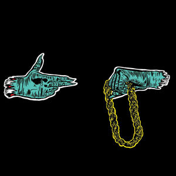
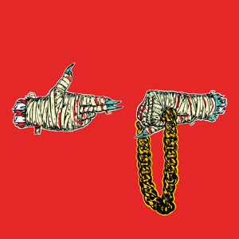
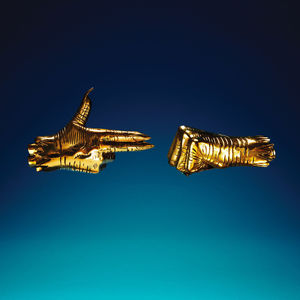
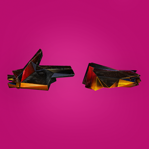

RUN THE JEWELS
What started as a one-off project and quickly evolved into a Grammy-nominated hip-hop super duo, Run the Jewels features the talents of Brooklyn rapper/producer and Atlanta emcee . Atop hard-hitting beats and ominous production, the pair trade aggressive and often wryly comical rhymes, touching upon social issues, life and death, and a heavy dose of chest-thumping bragging. Following their critically acclaimed, underground hit Run the Jewels (2013), they expanded their reach with 2014 crossover breakthrough Run the Jewels 2, which graduated the pair from genre secret to genuine chart presence. Their U.S. R&B/Hip-Hop number one Run the Jewels 3 landed in 2016, helping RTJ become an in-demand headliner for both rap and alternative rock fans.
Formed after produced 's 2012 album, R.A.P. Music, the duo released their debut offering Run the Jewels (). Critically popular and with a sizable underground fan base to boot, Run the Jewels quickly garnered national attention. Their sophomore effort, 2014's Run the Jewels 2, marked the pair's first appearance on the Billboard 200. RTJ2 featured appearances by , , , and 's , who lent his distinctive vocals to the fiery single "Close Your Eyes (And Count to Fuck)." A crowd-funded remix version of the album -- with all the music replaced by samples of meowing cats -- was released in 2015 as Meow the Jewels. It featured guest appearances from 's , , and Internet feline sensation Lil Bub. The group ended the year with the single "Rubble Kings (Dynamite on the Street)," released by the label.
Source: Spotify
MUSIC
   Run The Jewels
Close Your Eyes
Legend Has It
Ooh La La